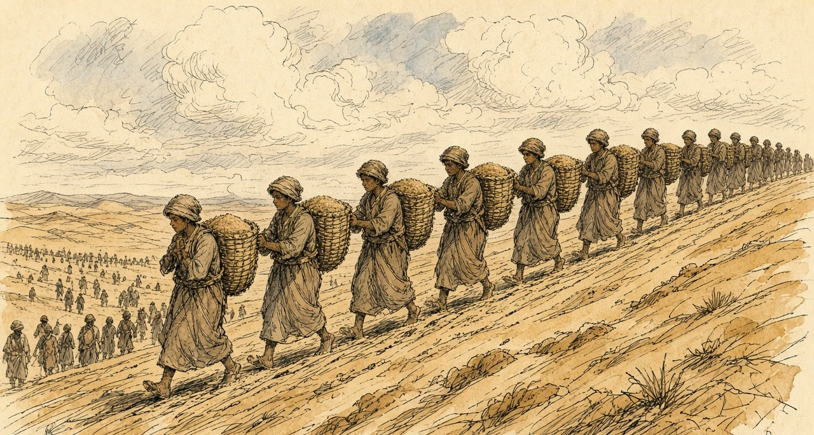
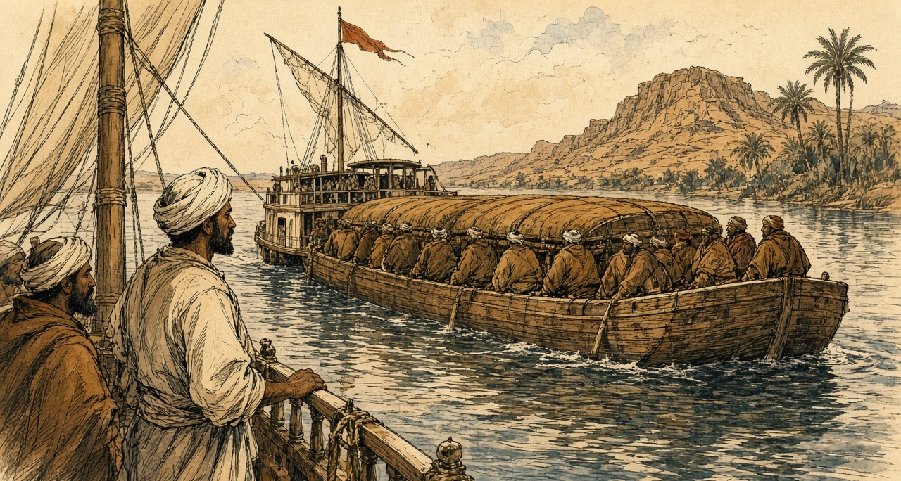
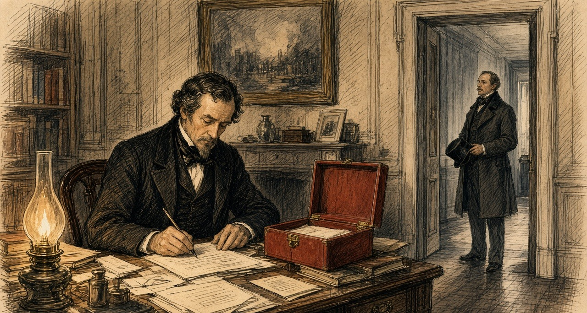
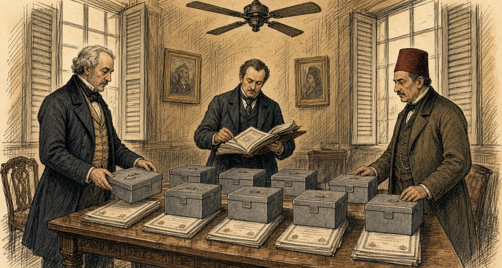
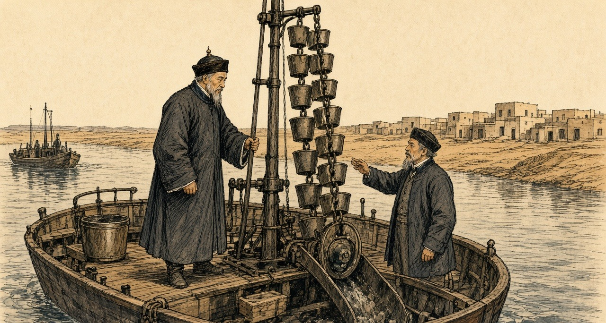
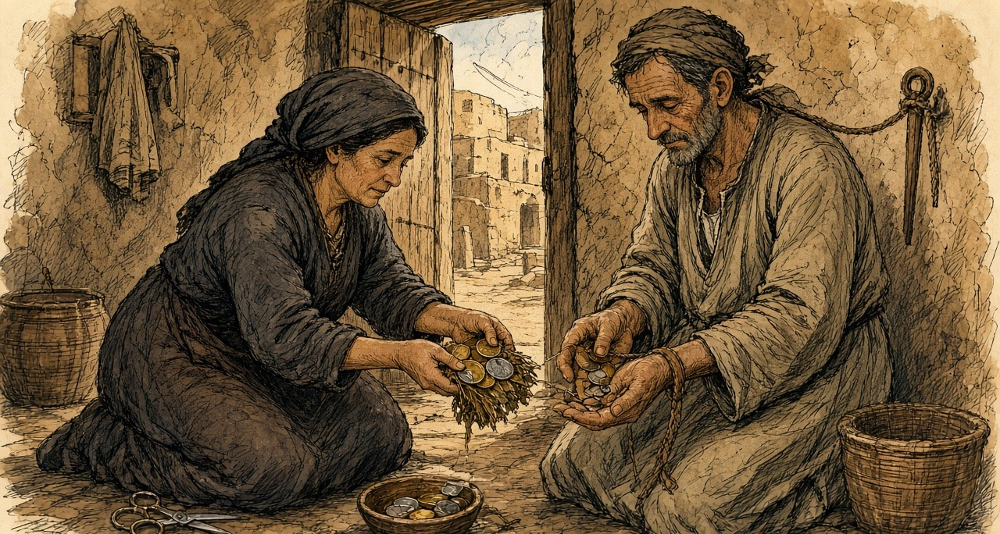

Chapter 4
Canal Shares, 1875
Alexandria, the Isthmus of Suez, Upper Egypt, London, and Cairo, 1856 to 1878
On 20 July 1856, at Alexandria, the viceroy of Egypt, Mohammed Said Pasha, set his name to a regulation for the fellah workmen whom the Suez company would employ. He had drawn it up, the preamble says, together with Ferdinand de Lesseps, president and founder of the Universal Company of the Maritime Canal of Suez. Its first article settled who would supply the men. The Egyptian government would furnish them on the demand of the company's chief engineers, as the work required.
The second article put a price on them. Two and a half to three piastres a day for a grown man, and rations in kind worth one piastre more. A worker under twelve years old got one piastre, with a full ration. Pay was to be counted out weekly, except in the first month, when the company would hand over only half until it had built up a reserve of fifteen days' wages for each man. The company would provide drinking water. In the copy printed at Paris in 1870 the next two words stand in capitals: EN ABONDANCE.
The rest followed on. The daily task would not exceed the one set by the Egyptian department of bridges and roads for its own canal works, and the number of men called up would take account of the seasons in the fields. Police on the workings would be government officers acting under the engineers' orders. A man who fell short of his task lost up to a third of his pay. A man who deserted forfeited the fifteen days held back, and the money went into the hospital fund. The company would shelter the workers under tents or in sheds, keep a hospital at its own cost, pay a sick man a piastre and a half a day while he could not work, and meet the travelling costs of the workmen and their families from home to the workings.
Six months earlier the concession had fixed the proportion. At least four-fifths of the workers employed on the canal would be Egyptians. The company's capital was two hundred million francs in four hundred thousand shares of five hundred francs each, and the viceroy came to hold 177,642 of them. He was also promised fifteen per cent of the company's future net profits. When Lesseps struck the first blow of the pick on the beach of Pelusium on 25 April 1859, at the place that would be named Port Said, a hundred and fifty workmen and employees stood around him.
* * *
The ridge of El-Guisr, between Lake Ballah and Lake Timsah, the autumn of 1862
Came the sheikh el-beled to the threshing-floor after the dawn prayer, and in his hand a paper from the mudir. Read-he the names. My name in it, and the name of Abdallah, son of my brother, and the sons of Mahmoud the miller, the three of them. A month, said the sheikh. A month only, inshallah, and you come-back and the money in your hand.
Went-out my mother to the door and stood. Said-not a thing. My wife put the bread in the cloth and tied-it, and untied-it, and put-in an onion, and tied-it again.
Walked-we. Days of-it, the road of the Sharqiya, after-that no road, the sand only. The feet of Abdallah, the skin came-off from-them the second day. Fourteen, the boy, not-yet become a man, and the paper wrote-him a man.
El-Guisr, they call-on it, the embankment, a hill of sand between two lakes, and on-it men. Wallah, not I-saw people by-this-number in one place, not at the mulid of Tanta. All Egypt at-there. Men of the Buhaira, men of the Saʿid. Twenty thousand, said the clerk. And in our-midst boys, small-ones, and the couffe on their backs like the men.
The couffe, plaited from the straw, a basket. You fill-it with your hands, the sand, the mud under the sand, wet and heavy when the digging goes deep. You lift-it on your back and climb. The slope, soft, the foot sinks in-it up-to the ankle, and the man in-front-of-you, his heels in your face. At-top you tip-it, and the sand runs out-of-it on the other side, and you go-down again bring another. From the rising of the sun until the sun goes-down. The neck, third day I-could-not turn-it. The shoulders, skinned-raw place-where the couffe sits, and the sweat runs into-them and burns.

Water, there-was. Dug-they a canal from the Nile to the two-lakes, the sweet canal, and the water came to-us in-it, water of the Nile, taste of the village in the desert. Alhamdulillah for this. The ration, bread dry, hard like the tile. You wet-it in the water and eat.
Day of Saturday, the pay. The clerk the Frankish on a table, and the man who speaks for-him beside-him, calling the names. The half, he-gave-to-us. The half the second stays with the company, said the speaker, fifteen days, until the month finishes. Who runs-away, is-lost on-him. Ran-away a man from Mit Ghamr second week, and his-half, went, they-said, to the hospital. Abdallah counted his piastres in his palm, time after time, until the clerk called the name that after-him.
Near end of our-month the engineers opened the cut from seaward, and came the water of the salt-sea into bed of Lake Timsah the dry. Stood the men on the bank watching on-it. Spread-it on floor of the lake, slowly, and the floor went-dark under-it. Ya Rabb. All that sand, our backs carried-it, and the sea entered place-where it-was. Me, I-looked on Abdallah. His lips cracked, and he-was laughing.
Gave-they-us the rest last day. Counted-it, the clerk, and the speaker counted-it after-him, and I counted-it after the speaker. Walked-we to the village. My mother put the bread in-front-of-us and sat, and her hand on the head of Abdallah, and she-lifted-it-not.
* * *
The Nile in Upper Egypt, December 1862 to May 1864
Lucie Duff Gordon, an Englishwoman with consumption who had come to Egypt for the dry air, wrote from her boat near Gebel Sheykh Embarak in the first days of December 1862. "The other day four huge barges passed us towed by a steamer and crammed with hundreds of the poor souls torn from their homes to work at the Isthmus of Suez, or some palace of the Pasha's, for a nominal piastre a day, and find their own bread and water and cloak." One of her crew, a boatman she calls Andrasool, recognized relatives of his from a village near Aswan on the barges. "There was much shouting and poor Andrasool looked very mournful all day. It may be his turn next."

On 18 January 1863 Said Pasha died, and his nephew Ismail succeeded him. On 11 February, from farther up the river, she wrote: "Everyone is cursing the French here. Forty thousand men always at work at the Suez Canal at starvation-point, does not endear them to the Arabs." Then: "If he ceases to give forced labour, the Canal, I suppose, must be given up."
That spring Constantinople sent a note to Paris, printed in every paper, saying that the corvée had been abolished throughout the empire, Egypt included, and that the canal was still being dug by it. In late May 1864, at Luxor, Duff Gordon was dosing her neighbours through an epidemic. "Two poor fellows have just come home from the Suez Canal work with gastric fever, I think. I hope it won't spread." The wife of one of them asked her whether there were more ladies like her in her own village. Duff Gordon told her there were many better, and good doctors. "'Alhamdullillah,' said she, 'then the poor people don't want you so much, and by God you must stay here for we can't do without you, so write to your family to say so, and don't go away and leave us.'" A few days later she added: "The cattle are all dead; perhaps five are left in all Luxor."
* * *
Fontainebleau, 6 July 1864, and the Isthmus, 1864 to 1869
The dispute between the company and Ismail went to Napoleon III to settle, and he signed his award at Fontainebleau on 6 July 1864. The regulation of 20 July 1856, he found, had the character of a contract between the viceroy and the company, with undertakings on both sides. Its cancellation entitled the company to compensation, and he set it at thirty-eight million francs. A convention of 30 January 1866 repealed the regulation outright, with the article of the concession that required four-fifths of the workmen to be Egyptian. From then on the company would find its labour under the common law, "sans privilèges comme sans entraves," without privileges and without hindrance.
The award ran on. Thirty million francs to the company for land it handed back. Six million for its rights over the fresh-water canal, and ten million for the work it had done on that canal and had still to do. Eighty-four million francs in all, owed by the Egyptian government to the company and set out in a table of instalments. The first fell due on 1 November 1864. The last fell due on 1 November 1879.
Egypt was paying the company for the loss of its own people's labour. Twelve years later, in the House of Commons, the Chancellor of the Exchequer would put a rough figure on that labour before the award. "This amount, on a rough calculation, may be taken at £400,000."
With the corvée gone the company turned to steam. The contractors Borel and Lavalley brought out dredges. Alfred Roussin, writing in the Revue des Deux Mondes in 1867, found railway trucks run under the shovels of the workmen at El-Guisr and drawn up the bank by locomotives coupled in pairs, the whistle and breath of the engines echoing off the cut. The first trenches along the line, he noted, were the work of the old fellah contingents.
Ismail kept paying. In 1869, short of the money to buy back further rights from the company, he detached from his shares the dividend coupons for twenty-five years, from 1 January 1870, and handed them over. The company issued paper against them and sold it. On 17 November 1869 the Empress Eugénie's yacht L'Aigle led the procession of ships into the canal. The shares the Khedive still held would earn him nothing until 1894.
When Said died in 1863, the public debt of Egypt had stood at £3,293,000. By 1876 the funded debt, with the Khedive's estate loans, stood at £68,110,000, and there was a floating debt of about £26,000,000 more. The American agent in Cairo wrote home in December 1875 that seventeen million pounds was a low estimate of what the canal had cost Egypt from first to last.
* * *
London and Cairo, 15 to 26 November 1875
On Monday 15 November 1875 Frederick Greenwood, editor of the Pall Mall Gazette, called on the Foreign Secretary, Lord Derby, to tell him that the Khedive was negotiating to transfer his canal shares to a group of French capitalists. Turkey had gone bankrupt in October. The coupons on the Egyptian public debt fell due on 1 December, and Ismail needed three or four millions sterling to meet them. The previous Friday he had agreed to sell the shares for ninety-two million francs, £3,680,000, paying the buyers eight per cent on them, raised later to eleven, until 1894, when the dividends came back. The Paris houses could not raise the money in time.
The Cabinet met on Wednesday 17 November and decided in principle that England should have them. Disraeli wrote to the Queen at Balmoral the next day.
"The Khedive, on the eve of bankruptcy, appears desirous of parting with his shares in the Suez Canal, and has communicated, confidentially, with General Stanton. There is a French company in negotiation with His Highness, but they purpose only to make an advance with complicated stipulations. 'Tis an affair of millions; about four at least; but would give the possessor an immense, not to say preponderating, influence in the management of the Canal."
Further down: "The Khedive now says, that it is absolutely necessary that he should have between three and four millions sterling by the 30th of this month! Scarcely breathing time! But the thing must be done." He added a note at the foot, that in his hurry he had not written according to etiquette. "There is no time to rewrite it. The messenger for Balmoral is waiting."
The Queen telegraphed her approval and wrote on the 19th that she feared it would be difficult to arrange. In Cairo the Khedive signed a fresh contract with the French group: eighty-five million francs, £3,400,000, for three months at eighteen per cent a year, against the shares and his fifteen per cent of the canal's profits. If he failed to repay, both were forfeit. On Saturday 20 November Derby told the French chargé d'affaires that Britain would be opposed to the shares "falling into the hands of another French company, so as to make the property in the Canal more French than it already was." The Paris money did not come. On Tuesday the 23rd Ismail offered his shares to the British government for £4,000,000, with interest at five per cent until the coupons were freed.
Parliament was not sitting. On 22 November the Chancellor of the Exchequer, Sir Stafford Northcote, wrote to Disraeli: "I am sure that there is no way by which we can raise the money without the consent of Parliament, and that the utmost we could do would be to enter into a treaty engaging to ask Parliament for the money, and then let the K[hedive] get it in advance from some capitalist who is willing to trust to our power of getting Parliamentary authority."
The capitalist was Baron Lionel de Rothschild at New Court. Disraeli's private secretary, Montagu Corry, used to tell the story afterward. He had waited outside the Cabinet room, and when his chief put out his head and said "Yes," he went to New Court and told Rothschild that the Prime Minister wanted £4,000,000 "to-morrow." Rothschild, as Corry told it, picked up a muscatel grape, ate it, threw out the skin, and said, "What is your security?" "The British Government." "You shall have it." Disraeli's official biographers, who printed the story, warned that it need not be taken as gospel. They were sure that Corry had gone to Rothschild on the 17th or 18th and come back with a promise.
The terms were settled at the Treasury at the start of the next week. On 24 November Northcote wrote again: "I find Smith and Welby a good deal startled by the largeness of Rothschild's commission. It will, I suppose, be criticised, but, if the business goes right, a matter of that kind will not signify much." The Cabinet had sat on it for more than four hours the day before, and it met again that day. Disraeli wrote to the Queen from Whitehall Gardens.
"It is just settled: you have it, Madam. The French Government has been out-generaled. They tried too much, offering loans at an usurious rate, and with conditions, which would have virtually given them the government of Egypt. The Khedive, in despair and disgust, offered your Majesty's Government to purchase his shares outright. He never would listen to such a proposition before. Four millions sterling! and almost immediately. There was only one firm that could do it—Rothschilds. They behaved admirably; advanced the money at a low rate, and the entire interest of the Khedive is now yours, Madam."

At Windsor the Queen wrote in her journal that she had "Received a box from Mr. Disraeli, with the very important news that the Government has purchased the Viceroy of Egypt's shares in the Suez Canal for four millions, which gives us complete security for India, and altogether places us in a very safe position! An immense thing." Her letter of the next morning added: "The great sum is the only disadvantage."
On 25 November, in Cairo, General Edward Stanton, the British agent and consul-general, and Ismail Sadek Pasha, the Egyptian Minister of Finance, signed the agreement. The British had believed they were buying 177,642 shares. The Khedive had sold some, and the number was 176,602. The price came down by the value of the 1,040 that were missing, to £3,976,582. On 1 December, once the shares were deposited with the consul-general, one million pounds would be held at Egypt's disposal by the Rothschild house in London. The rest would follow in December and January. Then the clause on interest:
"The Egyptian Government undertakes to pay to Her Britannic Majesty's Government interest at the rate of 5 per cent. per annum on the whole amount of the purchase money of the said 176,602 shares, in equal half-yearly payments,—the said payments to be made in London on the 1st of June and the 1st of December in each year, until such time as the coupons of the said shares shall be liberated from the engagement now existing with the Suez Canal Company; and the Egyptian Government further engages that the amount of the said interest shall be charged on the revenues of Egypt."
Britain had bought shares that would pay nothing for nineteen years. Egypt, which had sold them, would pay Britain their interest in the meantime, out of what it could raise in the country. On 26 November the shares were deposited at the British consulate in Cairo. When the House met in February, Gladstone told it that, by his information, they were in seven zinc boxes.

On the 25th Disraeli had written to Lady Bradford: "We have had all the gamblers, capitalists, financiers of the world, organised and platooned in bands of plunderers, arrayed against us, and secret emissaries in every corner, and have baffled them all, and have never been suspected." On the 26th Northcote recorded a protest against what he thought a policy wanting in magnanimity. "I don't like it."
* * *
The House of Commons, February to June 1876
On 14 February 1876 Northcote laid the figures before the Committee of Supply. "The Messrs. Rothschild undertook to pay this sum to the Khedive, and in consideration of their trouble and risk it is agreed that the Government will pay them 2½ per cent commission on the purchase-money, or £99,414." He meant to borrow the money from the Commissioners of the National Debt and to pay off the loan with the Khedive's interest. Within about thirty-six years, he said, "we shall be entirely free of the payment, and shall have our property in the Canal for nothing. This will, of course, be conditional upon two things—firstly, that the Khedive continues regularly to pay his £200,000 a-year." The reporter marked the response from the benches opposite: "Hear, hear!"
He also told the House how far Egypt had carried the company. The difference between what the company had raised and what it had spent was £5,160,000, "a sum which was almost entirely provided in one shape or another by the Viceroy of Egypt." He counted the forced labour, and the discount on the award paid early, and put the Khedive's total contribution at "nearly £10,000,000 of money or money's worth." Then the coupons. Ismail had cut them off to raise thirty million francs, and the paper issued against them was now worth upward of seventy million.
The adjourned debate came on 21 February. Gladstone took up the commission. "I want to know what was their risk. I want to know whether their risk was not a risk any rational man would have taken at the cost of one brass farthing." He reckoned the Rothschilds had been out of their money for three months at most, so that two and a half per cent for three months came to ten per cent a year, and with the Khedive's five per cent, fifteen. "I must say if we pay 15 per cent for our money in the British market for the purpose of accommodation, it seems to prove that we are an Oriental Potentate indeed."
Later that night Sir George Campbell, who had governed in India, asked where the £200,000 would come from. He read out the Khedive's revenue as published: £10,542,000, of which £6,300,000 went to the interest on the debt and £688,000 to the tribute owed the Sultan. Of what was left, two-thirds was land tax paid in advance under a law that would stop bringing anything in six years from its start. "The serious view of this matter was that the Government having identified themselves with the credit of the Khedive, he would be bound to raise the revenue to meet his engagements, and the result of that would be that a terribly-increased pressure would be brought to bear against the already unhappy ryots of Egypt." He had heard that the Khedive had devised a new poll tax. "Let us take our chance, but not allow ourselves to become a cause of oppression, and a source of stock jobbing and intrigue."
Disraeli answered the argument that the navy could always get satisfaction if the French company stood in the way. "The world is governed by conciliation, compromise, influence, varied interests, the recognition of the rights of others, coupled with the assertion of one's own." The vote passed without a division. On 23 February the House granted a sum not exceeding £4,080,000, and the money was raised by Exchequer bonds.
On 1 June 1876, in the Commons, Evelyn Ashley asked whether the half-yearly interest on the canal shares had been paid. Northcote answered that he believed it had. Then, after a word from W. H. Smith beside him: "The money has been paid to-day."
Each half-yearly payment, five per cent of £3,976,582 divided by two, came to £99,414, the same sum to the pound as the Rothschild commission.
* * *
Cairo, April 1876 to December 1876
By then the Khedive had stopped paying his Treasury bills. He suspended them on 8 April 1876. On 2 May a decree of the Khedive set up a Commission of the Public Debt, the Caisse de la Dette, whose commissioners would act as representatives of the bondholders. On 7 May another decree consolidated the debt of Egypt, which then stood at £91,000,000. France, Austria, and Italy named commissioners. The British government declined.
Stephen Cave, the minister Disraeli had sent to Cairo, had made a balance sheet of Egypt's finances from 1864 to 1875. Revenue raised in those years was £94,281,401, and the spending ran to £97,240,966. "For the present large amount of indebtedness," Cave wrote, "there is absolutely nothing to show but the Suez Canal, the whole proceeds of the loans and floating debt having been absorbed in payment of interest and sinking funds, with the exception of the sum debited to that great work." He singled out the law of the Moukabala of 1872, under which landowners could redeem half their land tax for ever by paying six years of it in advance, in one sum or in instalments over twelve years. It was, he wrote, "perhaps the most striking instance of the reckless manner in which the means of the future have been sacrificed to meet the pressing needs of the present."
That autumn George Goschen came out for the British bondholders, with Edmond Joubert for the French, and their arrangement became a decree on 18 November 1876. The unified debt was set at £59,000,000 at six per cent, with one per cent more for a sinking fund. The customs revenue was to be paid straight to the commissioners of the debt, and no receipt but theirs was valid.
Hussey Vivian, the British agent, reported on 8 December that it was impossible to account for the money the government had handled that year. "£4,000,000 for the Suez Canal shares, £5,000,000 advance from the French, and nearly a year's revenue have disappeared, while the payment of the coupon of the Unified Debt has been deferred, all the public employes are in arrears of pay, and heavy debts remain unsettled."
* * *
The roads of Suez, 5 January 1877
On the twenty-first day of the eleventh month of the second year of Guangxu, 5 January 1877, the steamer carrying 郭嵩焘 Guō Sōngtāo, the first resident minister the Qing sent to Britain, came up the Red Sea to the mouth of the gulf at Suez. He kept a daily record for the Zongli Yamen and wrote the canal into it.
In the third year of Tongzhi, he wrote, a Frenchman, 赖赛朴, Lesseps, had opened the waterway "以机器开河," cutting it with machines. It took seven years, cost seventy or eighty million, and the merchants of many countries had put up the money. Egypt, owning the land, had been given a third. Then: "埃及以千二百万金鬻之英人." Egypt sold it to the English for twelve million in gold. "于是英人合官民所出公费约得全股之半." So the English, between their government and their people, now held about half of all the shares. He dated the sale a year early. His account of the canal begins in 1864, the year the machines came, and has no levies in it.
He went ashore by rail to the town of Suez. The houses were mostly built of earth with flat roofs, nothing like the trading ports of the West. The women covered their heads and drew the cloth across the face, fastened at the nose by a cane piece, so that only the two eyes showed, "even the beggars." For drinking water there was "仅一井," only a single well. Going back to the anchorage in a hired boat he climbed onto two of the company's dredges. On one, between a pair of hulls, an iron frame three zhang high carried more than thirty iron buckets for lifting mud, turning on its wheel "如水车之龙骨," like the dragon-bone chain of a Chinese water-lift, tipping the mud into an iron trough and out along an iron chute five or six zhang long.

The steamer entered the canal on the 22nd. Guo noted the telegraph posted along the bank and a wooden hut every ten li or so for the men who worked it. At Aden, a few days before, he had written down the garrison: two thousand men, mostly Indians, holding a rock the English had taken as a stopping place on the sea road. On New Year's Day, in the Red Sea, an English passenger who grew tea in Assam had told him that India now produced thirty million pounds of tea a year. As the ship neared Southampton he wrote out a list of the British possessions it had passed. Hong Kong, Labuan, Singapore, Malacca, Province Wellesley, Penang. Bengal, Madras, Bombay, Ceylon, Socotra. Aden and Perim in the Red Sea. Malta and Gibraltar.
The Zongli Yamen printed the record in Peking that year. In June the Hanlin compiler 何金寿 Hé Jīnshòu impeached it, "立言悖谬，失体辱国": perverse in what it said, a loss of dignity and a shame to the country. The court ordered the printing blocks destroyed.
* * *
A village in Upper Egypt, the spring of 1878
The Nile, low the year that passed. Rose-not the water to the fields the high, and the fields stood dry and cracked. What we-gathered, a-little. Half of the half.
Came the collector before the cutting. Came he, and with-him the soldiers and the courbash, and a merchant from the town, and a scribe. The tax, of this year, and the year that after-it. Said my husband, ya effendim, the crop not-yet cut. Said the merchant, then sell-it-to-me now. Fifty piastres for the ardeb, pay I the tax, and you-bring-to-me the grain after a month.
Does-he what. Put-he his thumb on the paper.
After a month, the grain went to boat of the merchant. In market of the town that day the ardeb was-sold for a hundred and twenty. Stood my husband in the market and heard the price. Returned-he the house and sat beside the wall and his hands, trembling on his knees, and he-stood-not for prayer of the maghrib.
The tax finished-not. Fifty for the ardeb, sufficed-not. Came the sheikh el-beled with the collector second time and stood-they at our door. Who with-him-is, gives. Who with-him-is-not, the courbash.
Umm Hassan, next-to-us, her son took-they-him to the threshing-floor. Heard-it the village all-of-it. One, two. Counted-I until I-could-not count. After-it carried-they-him to the house, and she walking behind-him and her hands on her head.
My coins. Of my mother before-me, and her mother before-her, on a string, and tied-she-it on my neck night of my wedding, and wore-I-it since that-day. The cow, sold-we-her the year that passed, and the donkey. Remained the coins.
Took the scissors, I, and cut the string. My fingers obeyed-me-not first time. Put-I the coins in palm of my husband, and closed-he his hand on-them and opened-it, and closed-it. Went he to the scribe. The scribe counted-them on the table, and wrote, and turned to the-one after-him.

On the road, women from the villages that southward, walking, and with-them children, from door to door. Bread, lillah. Gave-we what with-us-was, first days. After-it remained-not a thing we-give-it, and they stayed walking, and we closed the door. Our-Lord forgive-us. Our-Lord forgive who was the cause.
* * *
Cairo and the provinces, the spring of 1878
On 1 May 1878 about £2,000,000 fell due as interest on the unified debt. On 31 March the commissioners of the debt held about £500,000. Evelyn Baring, by then the British commissioner, later wrote that he and his colleagues would have preferred not to pay, knowing the money could not be found without taking the taxes in advance, "a course to which we were opposed as being oppressive to the peasantry." The French government held that the Khedive could pay if he chose. On 16 April it asked London to join in pressing him, and Vivian was instructed to act with his French colleague.
"Two of the most iron-fisted Pashas who could be found were sent into the provinces," Baring wrote. "They were accompanied by a staff of money-lenders who were prepared to buy in advance the crops of the cultivators." The year before, the Khedive had admitted to Vivian that to pay the coupon the taxes were being collected "for nine months, and in some places for a year in advance." In Upper Egypt there was famine. Sir Alexander Baird, asked by the government to help with relief, reported: "It is almost incredible the distances travelled by women and children, begging from village to village." He added that the death register in no case showed a death from starvation, but that he was satisfied the excess deaths had come from dysentery and other diseases brought on by insufficient and unwholesome food. "In some cases, perfectly authenticated, corn was sold to the merchants for 50 piastres an ardeb, which was delivered in one month's time when it was worth 120 piastres an ardeb."
The last instalment reached the commissioners of the debt a few hours before the coupon fell due. Baring wrote of the money that came in: "The great diversity of currency, and the fact that many of the coins were strung together to be used as ornaments, bore testimony to the pressure which had been used in the collection of the taxes."
Mini-glossary
- Ardeb (5 occurrences in this chapter): Standard Egyptian dry measure of grain capacity, approximately equivalent to 5.44 imperial bushels or 198 litres.
- Caisse de la Dette (1 occurrences in this chapter): International Commission of the Public Debt established in Egypt in May 1876 to collect assigned state revenues for European bondholders.
- Corvée (2 occurrences in this chapter): Unpaid or nominally paid compulsory state labour, particularly the mass drafts of Egyptian fellahin used to dig the Suez Canal between 1859 and 1864.
- Couffe (3 occurrences in this chapter): Plaited straw basket carried on the back by Egyptian fellahin to haul sand and wet earth out of the Suez Canal excavations.
- Courbash (2 occurrences in this chapter): Heavy whip of hippopotamus hide used by tax collectors and village officials in 19th-century Egypt to enforce payment and labour.
- Fellah (2 occurrences in this chapter): Plural fellahin; Egyptian peasant cultivator or agricultural labourer whose crops and corvée labour underwrote the Khedive's debt and canal works.
- Khedive (21 occurrences in this chapter): Title of the autonomous Ottoman viceroys of Egypt, formally granted by the Sultan to Ismail Pasha in 1867 and held by his successors until 1914.
- Moukabala (1 occurrences in this chapter): Egyptian tax law of 1872 allowing landholders to redeem half their future land tax in perpetuity by paying six years' tax in advance to the Khedive.
- Mudir (1 occurrences in this chapter): Provincial governor in 19th-century Egypt responsible for tax collection and corvée labour quotas.
- Ryot (1 occurrences in this chapter): Indian peasant cultivator or tenant farmer; also applied by British officials with Indian service experience to Irish and Egyptian peasants.
- Sheikh el-beled (2 occurrences in this chapter): Village headman in Egypt responsible for naming men to the corvée and assisting state tax collectors.
- Yamen (2 occurrences in this chapter): The official headquarters, residence, and courtroom of a Chinese mandarin or magistrate.
Important names
- Baring, Evelyn (Lord Cromer) (3 mentions in this chapter): British Commissioner of the Public Debt and long-serving Consul-General in Egypt (1883–1907).
- Disraeli, Benjamin (9 mentions in this chapter): British Prime Minister who arranged the 1875 purchase of Khedive Ismail's Suez Canal shares with Rothschild financing.
- Duff, Douglas V. (3 mentions in this chapter): Former Black and Tan in Ireland who served as an officer in the British Gendarmerie and Palestine Police in Jerusalem.
- Gladstone, William Ewart (2 mentions in this chapter): British Prime Minister and Chancellor of the Exchequer whose career spanned the 1840 Opium War debate, Irish land and Home Rule legislation, and the 1882 occupation of Egypt.
- Gordon, Lucie Duff (3 mentions in this chapter): English writer resident in Upper Egypt during the 1860s who recorded the impact of the Suez Canal corvée and taxation on the fellahin.
- Lesseps, Ferdinand de (3 mentions in this chapter): French diplomat and promoter of the Universal Company of the Maritime Canal of Suez.
- Northcote, Stafford (5 mentions in this chapter): British Chancellor of the Exchequer during the 1875–1876 Suez Canal share purchase.
- Rothschild, Lionel de (8 mentions in this chapter): Head of N. M. Rothschild & Sons in London who advanced the £4,000,000 for the British government's purchase of the Suez Canal shares in 1875.
- Said Pasha (2 mentions in this chapter): Viceroy of Egypt (1854–1863) who granted Ferdinand de Lesseps the Suez Canal concessions and the 1856 corvée labour regulation.
Sources
- Rothschild Archive, London. Lionel de Rothschild correspondence and loan documents for the £4,000,000 advance, November 1875.
- Hansard, House of Commons Debates and Parliamentary Papers. Suez Canal share purchase, November 1875. Especially HC Deb 14 February 1876, vol. 227 (Supply: The Suez Canal Shares), for Northcote's figures: 176,602 shares, £3,976,582, the 2½ per cent commission of £99,414, the £200,000 a year, the "Hear, hear!", the £5,160,000, the £400,000 of labour and "nearly £10,000,000 of money or money's worth," and the délégations; HC Deb 21 February 1876, vol. 227, cc. 562-661 (Supply: £4,080,000 Suez Canal Shares, adjourned debate), for Gladstone on the "one brass farthing," the 15 per cent and the "Oriental Potentate," and the seven zinc boxes, and for Sir George Campbell on the Khedive's revenue, the poll tax and "the already unhappy ryots of Egypt"; HC Deb 1 June 1876, vol. 229, c. 1521, for "The money has been paid to-day"; HC Deb 19 July 1883 (Childers on the 5 per cent paid by Egypt until 1894 against borrowing at 3½ per cent), consulted for the interest arrangement.
- The Suez Canal (Shares) Act 1876 (39 & 40 Vict. c. 67), legislation.gov.uk, reciting the Agreement of 25 November 1875 between Stanton and Ismail Sadek Pasha and the Commons resolution of 23 February 1876 for £4,080,000.
- Bin Chun 斌椿. Chengcha Biji 乘槎筆記 [Notes from a Raft]. 1866. Collected in Zhong Shuhe 鍾叔河, ed., Zou xiang shijie congshu 走向世界叢書 [The World from Within: Chinese Travel Writing to the West]. Changsha: Yuelu Shushe, 1985. (Consulted for the source chapter's claim; the quoted line could not be verified and is not used.)
- Guo Songtao 郭嵩燾. Shi Xi Jicheng 使西紀程 [Record of a Mission to the West]. 1877. Collected in Zou xiang shijie congshu 走向世界叢書. Read in the National Library of China scan transcribed at zh.wikisource.org: entries for Guangxu 2, 11th month, days 15 to 22 (30 December 1876 to 6 January 1877) on Aden, the Assam tea talk, Suez, the dredges, and the canal telegraph, and the closing list of British possessions. English translation: J. D. Frodsham, trans., The First Chinese Embassy to the West: The Journals of Kuo Sung-tao, Liu Hsi-hung and Chang Te-yi. Oxford: Clarendon Press, 1974.
- He Jinshou 何金壽, memorial of Guangxu 3, 5th month, 6th day (1877) impeaching Shi Xi Jicheng, as summarized by the Hunan Provincial Research Institute of Culture and History (css.hunan.gov.cn) and Hunan Today (hunantoday.cn).
- Monypenny, William Flavelle, and George Earle Buckle. The Life of Benjamin Disraeli, Earl of Beaconsfield. Vol. 5, 1868-1876. London: John Murray, 1920. Chapter 12, for Greenwood's call, the French option and mortgage, Disraeli's letters to the Queen of 18, 19, 20 and 24 November 1875 ("It is just settled: you have it, Madam"), the Queen's replies, Northcote's letters of 22, 24 and 26 November, Corry's grape story and the biographers' caveat, the letters to Lady Bradford, and the Commons speech on "conciliation, compromise, influence."
- Buckle, George Earle, ed. The Letters of Queen Victoria, Second Series. Vol. 2, 1870-1878. London: John Murray, 1926. For the Queen's journal of 24 and 25 November 1875.
- Wei Yuan 魏源. Haiguo Tuzhi 海國圖志 [Illustrated Gazetteer of the Maritime Kingdoms]. 1842. Modern edition: Changsha: Yuelu Shushe. (Consulted; the isthmus appears in juan 24 as 蘇爾士麥, not 苏夷士. Not used in the prose.)
- Règlement pour les ouvriers fellahs qu'emploiera la Compagnie de l'isthme de Suez, Alexandria, 20 July 1856, as printed in Drohojowska, Antoinette-Joséphine-Françoise-Anne. L'Égypte et le canal de Suez. Paris: A. Laporte, 1870, pp. 118-123 (fr.wikisource.org).
- Napoléon III. Sentence arbitrale, Fontainebleau, 6 July 1864, and the Convention of 30 January 1866 between the viceroy and the company, as reproduced by the Fondation Napoléon (napoleon.org, Suez dossier, historique 16 and 17).
- Roussin, Alfred. "L'Isthme de Suez et les travaux du canal maritime." Revue des Deux Mondes, 2e période, tome 70 (1867), pp. 369-405 (fr.wikisource.org). For El-Guisr in September 1862, the twenty thousand fellahs, the month-long contingents, the fresh-water canal reaching Lake Timsah on 10 January 1862, the opening of Lake Timsah to the sea on 18 November 1862, the first blow of the pick on 25 April 1859, the note from Constantinople of 6 April 1863, and the machines.
- Duff Gordon, Lucie. Letters from Egypt, 1863-1865. London: Macmillan, 1865; read in the Project Gutenberg edition (no. 17816). Letters of early December 1862 (the barges), 11 February 1863 ("Forty thousand men"), and late May and 2 June 1864 (the men home from the canal work, the cattle).
- Beardsley, Richard, U.S. Agent and Consul-General at Cairo, to Hamilton Fish, 13 December 1875. Papers Relating to the Foreign Relations of the United States, 1876, no. 322 (history.state.gov).
- Cromer, Evelyn Baring, Earl of. Modern Egypt. Vol. 1. London: Macmillan, 1908. Chapters 2 and 3, for the debt of 1863 and 1876, the suspension of 8 April 1876, the decrees of 2 and 7 May and 18 November 1876, Cave's balance sheet and his words on the Moukabala, Vivian's despatches, the famine and Baird's report, the coupon of 1 May 1878, and the strung coins.
- Blake, Robert. Disraeli. London: Eyre & Spottiswoode, 1966.
- Farnie, D. A. East and West of Suez: The Suez Canal in History, 1854-1956. Oxford: Clarendon Press, 1969.
- Ferguson, Niall. The House of Rothschild: The World's Banker, 1849-1999. New York: Viking, 1998.
- Karabell, Zachary. Parting the Desert: The Creation of the Suez Canal. New York: Alfred A. Knopf, 2003.
- Landes, David S. Bankers and Pashas: International Finance and Economic Imperialism in Egypt. Cambridge, MA: Harvard University Press, 1958.
- Day, Jenny Huangfu. Qing Travelers to the Far West: Diplomacy and the Information Order in Late Imperial China. Cambridge: Cambridge University Press, 2018.
- Leonard, Jane Kate. Wei Yuan and China's Rediscovery of the Maritime World. Cambridge, MA: Council on East Asian Studies, Harvard University, 1984.
- Lubbock, Basil. The China Clippers. Glasgow: Brown, Son & Ferguson, 1914.
- MacGregor, David R. The Tea Clippers: Their History and Development, 1833-1875. London: Conway Maritime Press, 1952.
- The National Archives, Kew. Foreign Office Suez share papers and Rothschild loan correspondence: series cited; piece numbers not assumed.